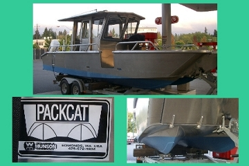
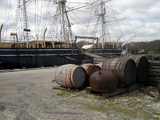

| Main | CB | FB | Fast | Size | Keel | Ballast | Point | Tall | Race | Lean | Ocean |
|
|
|
Dozens of individuals have told me so. But I can just not get that concept into my head. Ballast is ballast. When water is spread directly under a boat's floor boards and capped so that it can not slosh around (as in Mac26x boats), a modest heel raises the water ballast on the windward side out of the sea where it is just as effective as solid ballast. I have seen in print the argument that water ballast reduces head room and there are production boats with Mac26x like designs that use traditional ballast. But Mac26x boats have enough headroom for the average sized sailor. Since I am 6 foot tall (not average), I can always use head room. Murrelet has a rain hood (dodger) that extends the headroom over the galley (where it is needed most) to over 7 feet. I am comfortable. Sans dodger the average height (5' 7") person is as well. A controversy over water ballast raged from 1987 ending a few years before Murrelet was launched in 1999. Apparently boat manufacturers with faulty understanding of the technology advance by MacGregor Yachts built trailer sailboats where the water ballast was not directly under the boat's floorboards but instead on the centerline and to the bottom of the hull. This in combination with a rounded or V shape hull produced vessels requiring lots of heel for the water ballast to be raised from the sea where it is most effective. This is not the kind of water ballast advanced in the Mac26x. The Mac26x has outside-centerline water ballast that is also called movable water ballast. To search this site enter a word or phrase below:
|
The Cascails fleet exhibited a good representation of current offshore design, and it was interesting to see how they fared. Sitting on the weather rail of a Corel 45 was a pretty uncomfortable mix of the offshore washing machine spin-and-wash cycles that many of us are familiar with. It was pretty galling to watch the water-ballasted boats taking the conditions very much in their stride - and with significantly more comfort for their crews. It is probably fair to say that this was one of the tougher offshore races that I have completed - and that includes the Sidney to Hobart.
Chris Little, Commodore
Seahorse International
November 2004 pg 4
Coming from a powerboat background, and knowing that the new trawlers ballast fuel to keep the vessels from excessive rolling, I consider the movement of my water ballasted sailing cruiser natural. However, sea sickness, is possible. We were prepared to be sick on a several hour trip to Friday Harbor from Washington Park in 2002. The seas were bouncy if not rough and since we were motoring in a group it was necessary to maintain the speed of the catamaran lead boat.Owing to the unwavering tall mast of the catamaran there was some noticable rolling on the Mac26x cruisers at slower speed. But no sickness was experienced. Water ballast proved its worth that day.
Nausea, comes from the Greek word for ship, or naus. I know that keel boaters, accustomed to the feel of a weighted keel, expect to find water ballasted sail boats a visceral problem. Keel boats with rounded bottoms (while tipping more than a flat bottomed vessel when docked and rocking more in light seas without wind) "stiffen up" when at a heel. Hence, I believe, those aboard weighted keel vessels making good under sail often have an easier time avoiding sickness than many power boat occupants. The Mac26x, owing to the flat planing portion of its hull, is stable at rest and hardens up like a keel boat when on a modest heel under sail. Hence, it is likely that when operated by a skilled captain, these cruisers may be one of the least likely of the mono hulls to contribute to sea sickness.
 In
2000, I was fortunate in meeting the builder of Trekka, John Guzwell, a
year or so after his first ocean crossing in his new boat Endangered Species, a
water ballasted sloop. So I asked him about water ballast. In the 1950's Guzwell
bolted an iron keel to the bottom of Trekka prior to circumnavigation. The
sailor confided that even today he prefers the feel of a substantial keel to water ballast. In
fact, Endangered Species has both water ballast and a weighted keel. There is no
rule preventing such a combination, though many publications like to imply that
water ballast is just for vessels that can be trailered. Large Hunter cruisers
now combine small traditional keels with water ballast. (See
Hunter HC50)
In
2000, I was fortunate in meeting the builder of Trekka, John Guzwell, a
year or so after his first ocean crossing in his new boat Endangered Species, a
water ballasted sloop. So I asked him about water ballast. In the 1950's Guzwell
bolted an iron keel to the bottom of Trekka prior to circumnavigation. The
sailor confided that even today he prefers the feel of a substantial keel to water ballast. In
fact, Endangered Species has both water ballast and a weighted keel. There is no
rule preventing such a combination, though many publications like to imply that
water ballast is just for vessels that can be trailered. Large Hunter cruisers
now combine small traditional keels with water ballast. (See
Hunter HC50)

Regardless of Guzwell's preference, I suspect that, like Trekka's bolt on keel, weighted fin keels, even when retractable, should not be viewed as desirable on ocean going craft.In 2002 a Potter sailed to Hawaii from Berkeley California without noticable wear. After being shipped back from Hawaii, the vessel was dropped 5 feet from a lift into the waters at the Berkeley marina with significant structural damage being the result. The damage was apparently caused by the centerline weighted foil in spite of it being in its retracted position.
Guzwell was never happy with the bolt on keel for Trekka and thought the designer could have done better. To be fair to the designer, several keels had been proposed including a twin keel shoal draft design that would have allowed Trekka to sit upright in dry bays. Better likely has been done with the Mac26x via its centerboard/ water ballast system. This unique catamaran-like-ballast-tank inner hull design allows this vessel to launch and work in the shallow waters as low as 9 inches as well as open-ocean not unlike a PacCat.
 My research
on water ballast appears to refute MacGregor Yachts claim to have
invented water ballasted sail boats. According to Sailing Today, September
2000
page 83, Van de Stadt's Dehler 25 sloop may have bested MacGregor Yachts
by a
year or so in the use of water ballast. The German Dehler 25s were
produced from
1984 to 1991 and water ballast was reported in the US to be used
for
trailering reasons and cost
savings. With the Van De Stadt
Swing Rig Patent, I have come to doubt the reports involving cost.
Dahler appears
to be more interested in innovation than cost savings. The notion
that
lower cost always translates into mediocre
quality (a notion
that I do
not hold) may support this myth. There is also the belief that any
bilge
ballast (water or otherwise) represents a failure by the architect/
builders.
When a boat is launched and floats above her lines, correction is made by
adding
bilge ballast. Later, certainly before the boat is resold or perhaps
during haul
out, the bilge ballast might be tacked to the vessels
keel where the design
flaw
isn't so visible and is even harmfull.
My research
on water ballast appears to refute MacGregor Yachts claim to have
invented water ballasted sail boats. According to Sailing Today, September
2000
page 83, Van de Stadt's Dehler 25 sloop may have bested MacGregor Yachts
by a
year or so in the use of water ballast. The German Dehler 25s were
produced from
1984 to 1991 and water ballast was reported in the US to be used
for
trailering reasons and cost
savings. With the Van De Stadt
Swing Rig Patent, I have come to doubt the reports involving cost.
Dahler appears
to be more interested in innovation than cost savings. The notion
that
lower cost always translates into mediocre
quality (a notion
that I do
not hold) may support this myth. There is also the belief that any
bilge
ballast (water or otherwise) represents a failure by the architect/
builders.
When a boat is launched and floats above her lines, correction is made by
adding
bilge ballast. Later, certainly before the boat is resold or perhaps
during haul
out, the bilge ballast might be tacked to the vessels
keel where the design
flaw
isn't so visible and is even harmfull.
The notion that external keel ballast in any form is a flaw rather than a feature would not be a surprise to a sailor from 100 years ago. This trick of tacking lead on the external keel has probably been a joke among sailing work-boat owners for at least that long. Weight on a foil external to the hull creates a lever that the sea over time will use to crack the hull. I have chatted with two over 20 year old fiberglass sail boat owners who have experienced this cracking. They report that their vessels had not been grounded. Just sea action caused the cracks.
 Prior to about
1900,
all
sailing vessels used internal (also called bilge) ballast in the form of
cargo, stone and, as in the case of Spray,
concrete. Spray
continues to be disparaged as a cheep boat because
of her ballast. Yet this method of ballasting has been proven by
time. Oriole is a 1918 George Owen (of MIT) racing yacht that was
intended to be the largest yacht on the Great Lakes. She is larger
than the current day maxis at 102 foot over all and 91 foot at the
water line. The way to honor the sailors of the past is to preserve
their vessels and in 2003 Oriole underwent a major overhaul. The most
significant make over was the removal of CONCRETE ballast which was
replaced with lead. Over the years Oriole gained a following among the
less "yachty" and became known as the peoples boat. However it must
have been distressing to the well heeled to have a concrete ballasted
vessel better them. Oriole came in second in the 1998 Victoria-Maui
race and in 2000 finished more than 19 hours ahead on corrected time
over some of the most modern raceboats on the Pacific. In 1998 she
finished seventh in the Sydney-Hobart.This was the infamous race where
55 people had to be rescued, 5 boats sank, and 66 boats retired out of
the 115 that started, 6 sailor's lives were lost during that race. To
say the Oriole's design is proven, understates the contributions she
has made to the science of sailing. The 102 ft ketch is currently
owned by the Canadian Navy and is used for training of Regular and
Reserve Canadian Navy members. It is distressing to those who would like
to think of Oriole as the people's boat to
have the concrete removed and replaced with an expensive supstitute that
has not been shown any more effective.
Prior to about
1900,
all
sailing vessels used internal (also called bilge) ballast in the form of
cargo, stone and, as in the case of Spray,
concrete. Spray
continues to be disparaged as a cheep boat because
of her ballast. Yet this method of ballasting has been proven by
time. Oriole is a 1918 George Owen (of MIT) racing yacht that was
intended to be the largest yacht on the Great Lakes. She is larger
than the current day maxis at 102 foot over all and 91 foot at the
water line. The way to honor the sailors of the past is to preserve
their vessels and in 2003 Oriole underwent a major overhaul. The most
significant make over was the removal of CONCRETE ballast which was
replaced with lead. Over the years Oriole gained a following among the
less "yachty" and became known as the peoples boat. However it must
have been distressing to the well heeled to have a concrete ballasted
vessel better them. Oriole came in second in the 1998 Victoria-Maui
race and in 2000 finished more than 19 hours ahead on corrected time
over some of the most modern raceboats on the Pacific. In 1998 she
finished seventh in the Sydney-Hobart.This was the infamous race where
55 people had to be rescued, 5 boats sank, and 66 boats retired out of
the 115 that started, 6 sailor's lives were lost during that race. To
say the Oriole's design is proven, understates the contributions she
has made to the science of sailing. The 102 ft ketch is currently
owned by the Canadian Navy and is used for training of Regular and
Reserve Canadian Navy members. It is distressing to those who would like
to think of Oriole as the people's boat to
have the concrete removed and replaced with an expensive supstitute that
has not been shown any more effective.
Often, when a material is inexpensive and is used in boat manufacturing, there is an assumption by those not making a livelihood from the sea, that the boat is not seaworthy. Cost is not the most important factor in seaworthines. The notion that the least cost ballast, water, and water in movable form (caskets) was used by almost all square riggers should distress those advocating external movable (canting) bulb ballasted keels which are competing with movable water ballast designs.
In spite of the availibility of movable keels for over a decade now, movable water ballast continues to be used in the newer single handled ocean racing sailboats where cost is not a concern. Where the canting keel sailing machine may better in normal wind behind her she suffers in light wind because the canting keel form of movable ballast can not be moved off the vessel.
I suspect that movable water ballast represents the better sail boat design philosophy but that canting keels, because they can be patented, will be marketed heavily and will become accepted owing to marketing, rather than seaworthiness.

After many stinging comments from those who believed me incapable of understanding this ballast business, I was pointed to WoodenBoats November/December 2000 issue which has been the most helpful article I have come across in refuting sailing myths. I keep that now with my Mac26x owners guide, and thank the wooden boat building enthusiasts for advancing the use of water ballast, and showing me that I am capable of seeing some sailing truths, where more experienced sailors may not. To quantify things, water ballasted designs like the Mac26x, where the ballast is located as far outboard as possible, are roughly four times more stable at 10 degrees of heel, three times more stable at 30 degrees, and twice as stable at 50 degrees than similer vessels with weighted centerline keels. (see G$ 24) The off centerline as far as possible arrangement lowers the center of gravity and "maximizes stability at low heel angles, since the flotation effect of the windward keel is quickly lost if the boat heels enough to pull it from the water. This is exactly like a catamaran." The bottom line is that the Mac26x design has much more stability than traditional mono hulled boats and less capsize risk than multi hulls.James Boyd in his April 2005 Sailing World article (page 45) notes that the Vende Globe machines with canting keels also have water ballast. The question as to which is the primary ballast system on boats that have both may have been answered in that article.
Vincent Riou, who is kind of a McGyver (technically proficient) when it comes to fixing things, was unable to fix hydraulic rams used to cant PRB's keel. This forced him to drop the keel down to leeward before any maneuver in the Southern Ocean passage of the 2004/2005 Vende Globe race, slowing things down considerably. However Boyd paints the failure of one of six centerline water ballast tanks on the same boat as more dramatic. The tank could not be repaired allowing air to enter it in a way that meant that 1.5 tons of water ballast could not be used effectively when PRB was on port tack. Boyd says there was an "explosion" involving the tank. So both ballast systems had failures. We come to see from Boyd's article that water ballast is the primary movable ballast form 50 miles from the finish line when the newly-launched-for-the-race Ecover's canting keel falls off.
Rather than abandoning the race. Golding, fills the water tanks, extends the twin outboard dagger boards and twin rudders and then further stabilizes the boat by reducing sail. In this Mac26x configuration, Ecover sails at 9 knot speeds to become the first monohull in recent history to ever have finished a major race without the benefit of an external keel foil. The experience of PRB and Encover should be conclusive regarding which form of movable ballast is best.
However debate will continue because of vested interests in canting technology and bulb keels. The best countering argument involves the fact that Riou had the benefit of high speed Internet access where as the other sailors were not able to keep their computer and wireless equipment operating at that speed. Fast web surfing for weather and sea information, in combination with a center foil that could gybe to windward (like the Mac26x) meant Riou could find better wind and sea conditions, point high to get to them, and make a better course to the finish line to win. This argument ignores the fact that Riou had moved ballast off of the canting keel of PRB by using a significantly smaller bulb and thiner foil so that he could add an additional internal (though possibly flawed) water ballast tank.
 Pascal
Conq and Guillaume Verder further explained PRBs tanks in an
article in the July 2005 Seahorse magazine (page 45). PRB has water
ballast tanks remarkably similar to Mac26x vessels. The designers call
these tanks inertia ballast tanks and they are placed to make the
center of gravity align with the center of buoyancy at a 10 degree angle of heel.
Additional tanks along the centerline running bow to stern are being
contemplated. The inertia ballast tanks provide substantial extra righting
moment. "The distribution of these low centre of gravity ballast tanks is
chosen to offer both increased inertia to go through waves in the upwind
conditon and to counteract the pitching moment induced by the sail driving
force in the reaching condition. This set-up was first trialled on
Christophe Auguin's successful Finot 60 Geodis some 10 years ago."
Christophe Auguin sailed Geodis to victory in both the 1994-95 Around
Alone and 1996-97 Vendee Globe. PRB continues to demonstrate the
winning ways of this design.
Pascal
Conq and Guillaume Verder further explained PRBs tanks in an
article in the July 2005 Seahorse magazine (page 45). PRB has water
ballast tanks remarkably similar to Mac26x vessels. The designers call
these tanks inertia ballast tanks and they are placed to make the
center of gravity align with the center of buoyancy at a 10 degree angle of heel.
Additional tanks along the centerline running bow to stern are being
contemplated. The inertia ballast tanks provide substantial extra righting
moment. "The distribution of these low centre of gravity ballast tanks is
chosen to offer both increased inertia to go through waves in the upwind
conditon and to counteract the pitching moment induced by the sail driving
force in the reaching condition. This set-up was first trialled on
Christophe Auguin's successful Finot 60 Geodis some 10 years ago."
Christophe Auguin sailed Geodis to victory in both the 1994-95 Around
Alone and 1996-97 Vendee Globe. PRB continues to demonstrate the
winning ways of this design.
 The PacCat
(discussed above) is
apparently very stable and its success explains odd contraptions like the
one pictured to the left. This motor vessel consists of a frame attached
to two inflated pontoons. I imagine it is used for some kind of fishing,
perhaps
sword fish off the coast of California. Two 25 hp motors are mounted.
Note the ribbed dingy inside the starboard hull and blue water
catamaran on her bow. All three craft have poor angles of vanishing
stability.
The PacCat
(discussed above) is
apparently very stable and its success explains odd contraptions like the
one pictured to the left. This motor vessel consists of a frame attached
to two inflated pontoons. I imagine it is used for some kind of fishing,
perhaps
sword fish off the coast of California. Two 25 hp motors are mounted.
Note the ribbed dingy inside the starboard hull and blue water
catamaran on her bow. All three craft have poor angles of vanishing
stability.
 The capsize
ratio or formula and ability of the craft to remain floating even if
swamped are the most important items for survivability.
Survivability and stability ratios are related to each other only for
designs that by modern standards should be questioned.
The capsize
ratio or formula and ability of the craft to remain floating even if
swamped are the most important items for survivability.
Survivability and stability ratios are related to each other only for
designs that by modern standards should be questioned.
The angle of vanishing stability ratio has long been used to disparage multihulls from use as blue water cruisers. This ratio was used until recently to keep multihulls out of ocean races such as the West Marine TransPac. The angle to which the boat can heel and still right itself is the Angle of Vanishing Stability. Acording to US Sailing, the angle of vanishing stability is the resistance to capsize and heel and is one of the best predictors of ultimate stability.
A dingy will have a stability range of about 80 degrees, an inland water boat should have a stability range of 100 degrees, and an offshore sail boat of at least 120 degrees. Boats which have stability angles of less than 140 degrees may be left floating upside down once capsized. Boats with a higher angle will usually right themselves.
Roger MacGregor reports that for comparson purposes the stability ratio for the Mac26x is 115 and that when ballasted the vessel is completely self righting, indicating greater than 140. The load carried in the Mac26x impacts the calculation. http://www.sailingusa.info/cal__avs.htm is usfull in seeing that.
For example, unballasted with centerboard extended the Mac26x has an estimated angle of vanishing stablity of 112 by http://www.sailingusa.info/cal__avs.htm. Ballasted her estimated ratio is 130, best I can tell (the calulation shows minus 50. 180 - 50 = 130). I use 35 lbs as the weight of the centerboard in the estimates. When the Mac26m was introduced, it was believed that the weight of the water inside the centerboard should be included (about 100 lbs). I am cloudy on that. It is clear in anycase that when loaded down for an extended cruise, with gear and provisons properly secured, that the ratio for a Mac26x will be over 140. The calculation makes no distinction between ballast stored internally (in the form of secured gear, lead pellets or water) and weight tacked on to a keel in bulb or other form. A review of page 49 of a 1994 study shows our ballasted X boats to be one of the "good ones".
As with all useful ratios, this one makes one think about appropriate design. The Oden 820 and Potter notion of putting weight on a fin is a bad one for hull centerline stress reasons if not just for drag reasons. When the X was designed this was known and it has become known in aircraft testing. Today craft such as the F/A-22 are redefining aircraft by moving missiles and fuel internally rather than beneath the wings. This gives them low aerodynamic drag allowing less fuel use. It has yet to be shown that bulb keels are desirable. In fact Ted Brewer and Bill Luders showed 40 years ago that they were not and Brewer still believes bulbs are foolish. See keel design. Stability is everthing in boat design and if bulb keels were desirable designers would use them on power only vessels. They do not, prefering ballast in the form of golf cart batteries, engines, and in the case of fishing vessels, ice (a form of water ballast).
I conclude that the M betters the Oden 820 in forward thinking when one comes to view advancements in sailing design as being related to work in aircraft design. The Oden 820 (owing to beam ) apparently can not match the X in Vanishing Stability or Capsize Risk ratios and hence is not considered an ocean sailboat. The M can be considered an ocean worthy-by-ratio monohull-pocket cruiser by those who view the Limit of Vanishing Stability (also referred to as the Limit of Positive Stability or LPS) as important, after being loaded with provisions that are stored low in the vessel and secured.
Many assume that once the LPS is reached the boat will invert and stay that way until wind or wave action push it right way up. But this isn't true with the most seaworthy of shapes, those being the sphere and the log. It is only true with shapes that have until recently been sailboat shapes. The shape of the top deck of the Mac26x and Mac26m makes that assumption incorrect.
It is similar to when 2 + 2 no longer equals 4 because we are no longer
working in base 10.
Roger Macgregor presents a notion of stability by using one of those
punching toys. You know the
clowns
that you punch and they right themselves. That is how we are to think of
stability on the Mac26x. I do not own such a toy but I do have a beach
ball and I have run this experiment in the hot tub. If I tape a weight,
even a small one, to the bottom and turn the ball upside down it will
always right itself - even with the jets of the hot tub turned full up.
So a report that the Mac26x righted herself in a test pool when
plunked
upside down doesn't surprise me. But this notion is met with disbelief by
those trained by US Sailing. The centerboard even retracted is not going
to change the result. This has to do with the shape of the cabin top. It
isn't flat enough to provide inverted stability. As long as the boat has
the weight of the ballast tank structure and yes even motor where it is
she is going to right her self even without water ballast. Unlike lesser
designs, the Mac26x has not one but two compression poles. So having the
deck salon ripped off by sea action doesn't appear to be a possibility.
So how does the training of MacGregor Yachts compare to the
confused consensus of naval architects and sailboat designers?
Here we are to recognize that torque called the righting
moment (RM) is
related to the boat's displacement. This is definitional. The displacement
multiplied by the horizontal distance between the Center of Gravity (CG)
and the center of buoyancy (CB) is the definition of righting moment. That
horizontal distance is called the righting arm (CZ).
With that recognition, we are to see that the more displacement the
greater the righting moment. Then we must accept the notion that a boat's
heeling angle can be pulled past 90 degrees.
Eventually as the boat is pushed past 90 degrees, the CG and CB will
come
into vertical alignment as they are when the boat is at rest right side
up. This is the point where the righting moment is zero and it is called
the Limit of Positive Stability (LPS).
Now comes the assumption:
All those nice
curves showing the angle in degrees against the righting
arm suddenly lose their survivability importance when the vessel
is designed
with a deck and flotation similar to the Mac26x. Naval Architects can
not
predict by math when a sailboat designed this way will invert or if it can stay that way. Instead of math you have to do actual tests.
It takes 120 lbs at the top of the jib to hold a Mac26x on its side
with
the mast parallel to the water. Unballasted with sails up, it does not
appear that the Mac26x can turn turtle. When plopped upside down with no
sails she rights herself. Completely filled with water she rights her self
and can even be sailed (though not fast).
Of course there is still capsize risk. In sufficient sea, all boats can
capsize. Nonetheless, this vessel, when capsized floats and the hatches
are positioned that except by wave and wake action they can be left open
without water entering the interior. That would be operator error however. The conclusion I come to is
that you can get stability (the ability to stay right side up) by adding
displacement to a traditional looking sailboat, or you can get stability
with additional flotation (buoyancy) on a boat shaped like a Mac26x or m.
CG or CB this is the question. With CB you get the benefit of boats that
when swamped may not sink as well as a faster sailboat when there is light
wind.
2 Plus 2 & 4
The research undertaken at the Wolfson Unit indicates ...
"that the most important characteristic for survival of a breaking wave
capsize is a large range of stability, since vessels with low ranges
are
prone to remaining inverted following such an incident.
|
|
|
|
|
Frank & Lisa Mighetto - 1260 NE 69th St. Seattle, WA 98115 - (206) 525-1458 voice and fax
mighetto@eskimo.com - Internet email address
mighetto@compuserve.com - Internet email address or 72154,3467 from within Compuserve